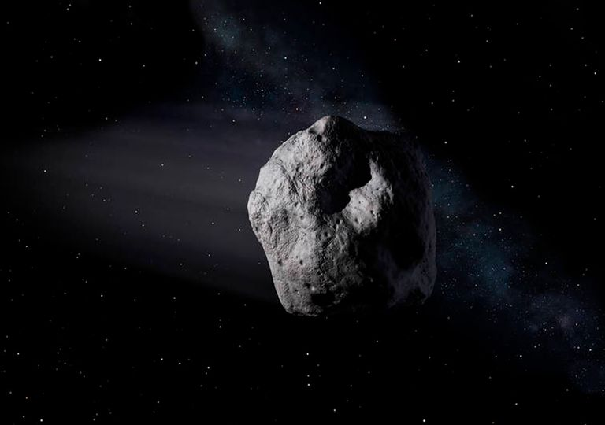

GALAXIAS
una galaxia (del griego γαλαξίας ‘lácteo’) es un conjunto de estrellas, nubes de gas, planetas, polvo cósmico, materia oscura y energía unidas gravitatoriamente en una estructura más o menos definida. La palabra «galaxia» procede de los griegos, los cuales tribuían el origen de la Vía Láctea a las gotas de leche derramadas en el universo por la diosa Hera mientras alimentaba al infante ércules.1 La cantidad de estrellas que forman una galaxia es enorme y varía desde las galaxias enanas, con 107, hasta las galaxias gigantes, con 1014 estrellas.[cita requerida] Formando parte de una galaxia existen subestructuras como las nebulosas, los cúmulos estelares y los sistemas estelares múltiples.
ESTRELLAS

Una estrella (del latín: stella) es un esferoide luminoso de plasma que mantiene su forma gracias a su propia gravedad. La estrella más cercana a la Tierra es el Sol.1 Otras estrellas son visibles a simple vista desde la Tierra durante la noche, apareciendo como una diversidad de puntos luminosos fijos en el cielo debido a su inmensa distancia de la misma. 2 Históricamente, las estrellas más prominentes fueron agrupadas en constelaciones y asterismos, y las más brillantes fueron denominadas con nombres propios. Los astrónomos han recopilado un extenso catálogo, proporcionando a las estrellas designaciones estandarizadas. Sin embargo, la mayoría de las estrellas en el Universo, incluyendo todas las que están fuera de nuestra galaxia, la Vía Láctea, son invisibles a simple vista desde la Tierra. De hecho, la mayoría son invisibles desde nuestro planeta incluso a través de los telescopios de gran potencia.
PLANETAS

Un planeta es un objeto astronómico que orbita una estrella y que es lo suficientemente masivo como para ser redondeado por su propia gravedad, pero no lo suficientemente masivo como para causar fusión termonuclear, y que ha despejado su región vecina de planetesimales.
METORITOS
Un meteorito es un meteoroide que alcanza la superficie de un planeta debido a que no se desintegra por completo en la atmósfera. La luminosidad dejada al desintegrarse se denomina meteoro.
ASTEROIDES
Un asteroide es un cuerpo celeste rocoso, más pequeño que un planeta y mayor que un meteoroide. La mayoría orbita entre Marte y Júpiter, en la región del sistema solar conocida como cinturón de asteroides; otros se acumulan en los puntos de Lagrange de Júpiter, y la mayor parte del resto cruza las órbitas de los planetas.
SATELÍTES
Un satélite natural es un cuerpo celeste que orbita alrededor de un planeta. Generalmente el satélite es más pequeño y acompaña al planeta en su órbita alrededor de su estrella madre. A diferencia de los fragmentos que orbitan formando un anillo, es el único cuerpo en su órbita. El término satélite natural se contrapone al de satélite artificial, siendo este último un objeto que gira en torno a la Tierra, la Luna o algunos planetas y que ha sido fabricado por el ser humano.